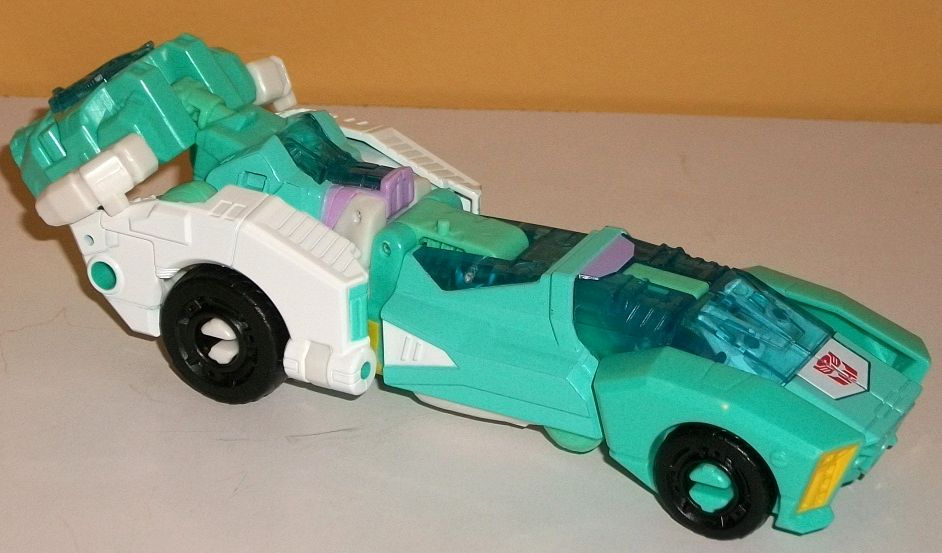

Allegiance
: Autobot
Size
: Deluxe
Difficulty of Transformation to Robot:
Medium
Difficulty of Transformation to Leg
:
Easy
Difficulty of Transformation to Arm
:
Very Easy
Color Scheme
: Light seafoam green,
white, and some black, translucent light blue, dull yellow, light pastel
purple, periwinkle, and light sky blue
Rating:
7.4

Moonracer's finally
got her own brand-new mold, and her alt mode is a futuristic speedster-kinda
car. It's much longer proportionally than any real car, and much skinnier.
As opposed to many "futuristic" or "Cybertronian" alt modes, though, Moonracer
isn't just obviously her robot mode in a yoga position, but rather looks
like a legit vehicle-- always a good thing, of course. She's very sleek,
the only real exception to this being the rear top section, which has a
few points that stick up a bit more than you'd expect on a super-aerodynamic
car-- but they do become her chest and body in robot mode, and it's a minor
issue at best. What is a considerably more noticeable/bigger issue are
the very obvious hands on the back end-- in fact, this mode really doesn't
have much of a back end. Her hands are folded up behind the rear side pieces,
and her hands fold just blatantly outwards towards the middle. There's
really not even much of an attempt to hide them. HOWEVER-- her Prime Armor
can be pegged in slightly above this area, effectively eliminating the
gap from any view except directly from the back, so that's a huge bonus.
Plus the end of her Prime Armor looks a bit like a thruster, so it's easy
to see it as her method of propulsion in this mode. The rest of this mode
is a mixture of slight angles, with a very low "roof" to the vehicle and
an extensive amount of transparent plastic for her "cockpit", which is
most obvious on the front portion behind her immediate front section, but
also continues on the top of her mid-section and even a bit on the top
of the rear section, where her stomach is in robot mode. It widens out
ever-so-slightly near the rear, but still keeps her slim profile. The mold
detailing is fairly minimal because of the "speediness" of this mode, but
some basic ridges and divots are here and there, with her cockpit windows
particularly detailed. (That said, the bottom of her feet are rather obvious
inside the window of the front portion of her cockpit.) Her color scheme,
as befits Moonracer, is primarily a nice seafoam green, with white more
predominant on the rear sections. The transparent light blue used for her
cockpit portions-- and the middle portion of her Prime Armor-- both complements
the green and contrasts against it by being a bit darker. There's also
a bit of dull yellow piant on her headlights, as well some light pastel
purple on a few minor bits, giving her a nice accent color that really
helps her pop that extra bit. She also has an angular white section near
the front of this mode, affixed with an Autobot symbol in the middle of
it in case you forget her allegiance. She comes with a black sniper rifle
accessory, which can be stored on ports on either side of this mode, near
the rear. There's also one peg for a Prime/Titan Master to stand on in
this mode, on the "hinge" part about halfway back on the top portion of
this mode.
To transform Moonracer
to her robot mode, there's a lot of rotation of different portions of her
waist and legs, but basically, her arms and head unfold from inside the
rear portion of the vehicle, the white parts of the rear portion fold back,
and then the front halves of her front vehicle section become her legs,
while the section covering the middle of her vehicle mode ends up on her
back. This means she's got quite a backpack in this mode, with roughly
half of her mass ending up there. However, her leg joints are strong enough
and she's got long feet with strong heels, so although this can upset her
balance a little, it's not as much as you might think. Ignoring the big
backpack, there's two other very noticeable pieces of kibble, and those
are the front side sections on the sides of her lower legs. They just don't
really fit with her otherwise very delicate, skinny feminine form well
at all, and should have folded away or compressed a bit more. Still, her
"core" proportions are pretty good, with a fairly slender frame and arms,
and slightly thicker legs. I particularly like the design on her body and
lower legs-- the quick change from white to light purple to seafoam green
looks quite nice, and the "cockpit" in her stomach gives her quite a unique
look there. For her headsculpt, she's got a fairly hefty collar around
her neck, with a streamlined helmet with some minor swept-back antennae
and a fairly friendly, feminine face. It's also got some nice color variation;
beyond the seafoam green on her helmet, she's got a yellow dot in the middle
of her forehead, white trim around her perwinkle face, and light sky blue
paint on her eyes with some pastel purple on her lips to make them slightly
darker in color than her surrounding face. For articulation in this mode,
she can move at the neck (at two points), shoulders, elbows, inwards at
the wrists, rotation at the waist, and movement at the hips (at two points),
knees (at two points), and ankles (at two points). Her hips and arms are
on balljoints too, so keeping in mind her backpack, you can get her into
some neat poses. Her Prime Armor piece can either be held in her hand,
slotted into the holes on the side of either of her lower arms, or pegged
onto her body-- though given how it pegs in, it looks like she's wearing
some sort of baby carrier, and not a piece of armor! As with most Prime
Armor pieces, Hasbro doesn't really seem to know what to do with it if
she's not in a limb mode.
Moonracer's arm mode
is only a slight modification of her vehicle mode. Her robot arms on the
back end are raised a bit and then connected to another tab on the back
end further up, getting them out of the way of the movement of the combiner
port, which is then flipped out from underneath the rear-back portion of
the vehicle mode. Then the front two-thirds or so of this section is simply
rotated and pulled out slightly to become the lower arm section, with of
course her "Prime Armor" plugging into the port at the front of the vehicle
to become the combiner hand. As an arm, this is remarkably solid; other
than obvious robot hands sticking up off the top of her shoulders, there
aren't any obnoxious extras (and even the arms, though obvious, are minor).
There is the big piece of vehicle behind the middle portion of the arm,
but it doesn't get in the way of articulation much and only "breaks away"
from the middle arm portion if you REALLY have her aiming forward at that
part, so it's all good. All in all the proportions are pretty solid and
consistent throughout. For articulation in this mode, Moonracer can move
at the shoulder (at two points), at the elbow (at four points, though it
should be noted that it can't be rotated inward towards the combiner body
any further than facing forward when it comes to the robot waist joint,
due to the toy's construction), at the wrist, at the base of each of the
two thumbs, and at the base of the four fingers (as a whole; they're all
one piece).
To get Moonracer into
her leg mode, you change the robot arms into the same position as they
are in arm mode, so that you can rotate the combiner port out and up. Then,
you take the front third or so of the vehicle mode and fold it back, pegging
it in with the relevant ports in her upper robot legs. Finally, you flip
up the middle section of her vehicle mode and flip out a little piece with
a hole in it for the Voyager Prime Armor foot piece, then flip that portion
of the vehicle mode down again before pegging in said foot piece and attaching
the deluxe Prime Armor "hand" to become the heel. For the most part, this
mode is still strong, maintaining a pretty straight look, but being bulkier
towards the bottom, as you'd expect for a leg. However, the robot arms
are painfully obvious and very weak "kneecaps" in front of the combiner
port, and just serve as a very weak finish to the mode. For articulation,
in this mode Moonracer can move at the knee (at two points), rotation at
the ankle because of how the foot plugs in, AND as a bonus, because of
how the mode fits together the leg can also rotate in the middle section
for a bit more poseability.
Overall, PotP Moonracer has a pretty good futuristic vehicle mode and pretty solid limb modes overall, but her robot mode is where all those sacrifices are shown, with quite a huge backpack and some kibble on the side of her legs, too. Still, this is her first new-mold toy, and she's got a pretty unique color scheme. If you want more fembots or want her more for the all-female combiner Orthia, she's a mildly recommended pickup, but otherwise there's several better PotP deluxe designs.
Review by Beastbot